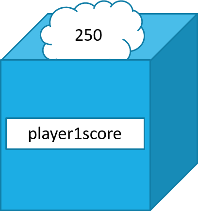
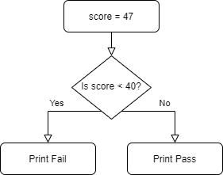
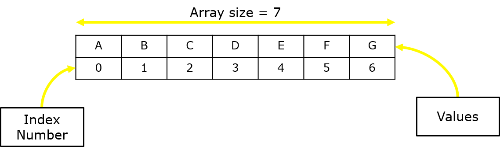

Intro to Python
Python is a high level programming language. The language is designed to be readable and is used across many large tech companies such as YouTube, Google, NASA etc.
You can download Python IDLE (Integrated Development and Learning Environment) from the official Python Website.
Other Python Resources:


Analysis
At National 5 level you will be expected to know the Development Methodology and the 6 stages within this development process:
- Analysis
- Design
- Implementation
- Testing
- Documentation
- Evaluation
This development methodoloy is an iterative process since stages of the methodoloy can be and will be revisited due to information gained at later stages.
Implementation
Variables
Variables are a way of storing information in the program. The value they hold is able to change throughout the programs run time. They are made up of two components;
- Name
- Value
The name of the variable is important - think of it like you are packing up your belongings to move house. In each box there will be items, usually of the same kind, so for example, we are packing away all of your shoes. The box will contain all of your shoes and you would write on the box "shoes" so that you know in that box there are all of your shoes.
The name must be descriptive of what is inside of the variable. If my variable is storing a players score, I would call my variable score, or player1score.
There are a few rules to take note of when deciding on a variable name;
- Be descriptive
- Start with a letter
- Can not contain spaces (player Score)
- Can not be a reserved word
So, to use the players score as a worked example, the variable would look something like this:
player1score = 250CSV Files
CSV stands for Comma Separated Values. It is a file that contains data which are, as by its name, separated by commas.
Here is an example of a CSV file containing the top 250 films on IMDb. Each row (ignoring the 1st) has the same type of data in each position as the next line; TitleID, Title, Year, Rating and Rating Count
TitleID,Title,Year,Rating,Rating Count
tt0111161,The Shawshank Redemption,1994,9.2,"2,089,382"
tt0068646,The Godfather,1972,9.2,"1,433,884"
tt0071562,The Godfather: Part II,1974,9.0,"995,997"
tt0468569,The Dark Knight,2008,9.0,"2,055,819"
tt0050083,12 Angry Men,1957,8.9,"591,688"
tt0108052,Schindler's List,1993,8.9,"1,082,960"
tt0167260,The Lord of the Rings: The Return of the King,2003,8.9,"1,487,166"
tt0110912,Pulp Fiction,1994,8.9,"1,633,178"
tt0060196,"The Good, the Bad and the Ugly",1966,8.8,"620,260"
tt0137523,Fight Club,1999,8.8,"1,670,480"
We can import this data into our Python program and store the data in parallel arrays or in an array of records. Once the data is imported and stored, we can then perform calculations, run algorithms and add to the data.
Reading a CSV file in Python
Below is Python code to import a csv file, read it's contents into an object and then loop through each line of the file. As we loop through each line, we can then access the individual pieces of data (separated by commas) and then store them in an appropriate data structure.
import csv
with open ("IMDbTop250.csv", 'r') as open_file:
open_file_read = csv.reader(open_file)
for row in open_file_read:
#Store data
open_file.close()Let's break down the code;
with open ("IMDbTop250.csv", 'r') as open_file:
This line will open the file called IMDbTop250.csv and copy the raw contents into a data structure called open_file. We can choose what mode we open the file using;
- 'r' open for reading (default)
- 'w' open for writing, truncating the file first
- 'x' open for exclusive creation, failing if the file already exists
- 'a' open for writing, appending to the end of the file if it exists
- '+' open for updating (reading and writing)
We then use open_file to actually start reading through the data;
open_file_read = csv.reader(open_file)
Python has a built in function to read CSV files, so we pass into this function the open_file object and it will return back to us a formatted data structure that we can then start to read through using a loop.
for row in open_file_read:
This line will create a fixed loop for the amount of rows in the csv file (no longer using the csv file, but instead the open_file_read object). With each loop, we can access the individual pieces of data in the row, which are separated by commas using the same priciple of accessing each item in an array, so row[0] would access the first item in the row etc.
Finally, it is important that we close the file once we have extracted all of the content and stored a copy into our program
Writing to a CSV file in Python
To write to a CSV file we setup our code in a similar way to reading a csv file; first we need to open an exising csv file or create one, then we will use a built in function to write the data to the file and then close the file.
with open("IMDbTop250.csv","w+") as open_file:
open_file.write(___________)Loops
Loops allow us to repeat code either a set number of times or an unknown number of times. Using loops is incredibly important for reducing the amount of code needed and therefore improves the efficiency of our code.
For Loop
First we will look at a For loop which is used for when we know how many times we want the code to loop for.
for i in range(1,6):
print("Hello")>> Hello
>> Hello
>> Hello
>> Hello
>> HelloSo an easy rule of thumb is to know your loop number, for example 10 and then add 1 to it. So, n+1 where n = number of iterations (loops)
While Loop
There will be situations where you don't know the amount of times you need to loop code, this is where a while loop comes in use.
A while loop will repeat code while a condition is True.
For example;
num = 0
while num != 10:
print(num)
num = num + 1The outcome of this code would be;
>> 0
>> 1
>> 2
>> 3
>> 4
>> 5
>> 6
>> 7
>> 8
>> 9It will print 0 - 9, as once num has a value of 10, it will stop the loop.
Selection
Selection is where we give the computer a condition and it must work out if the condition is true or false, from this outcome we can tell the computer to do x or y.
Let's consider the scenario where a teacher is entering grades into the computer and it must decide whether the person has passed or failed.
If a students achieves 40% or more on their test, they pass. If they achieve less than 40% then they fail.
score = 67
if score > 40:
print("Fail")
else:
print("Pass")The outcome of the code above would be;
>> PassWe can visualise the decision the computer needs to make by using a flowchart - the computer has two paths that it can go down but can only go down one.
Sometimes there is a situation where there is more than one True or False situation. Consider the teacher entering grades secnario; we have grades A, B, C, D, E, F and then Fail. We can ask the computer to choose a grade based on the inputted percentage.
This is where an ELIF condition is used. We start off with an IF, and then if that condition is False, it will move onto the next condition. And then if that condition is False, it will move onto the next condition and so on.
score = 56
if score >=90:
print ("A Grade")
elif score >= 80:
print ("B Grade")
elif score >= 70:
print ("C Grade")
elif score >= 60:
print ("D Grade")
elif score >= 50:
print ("E Grade")
elif score >= 40:
print("F Grade")
else:
print("Fail")Arrays
In Python we can store multiple values under one variable name, this is called an array. They work by assigning each item in the array an index number, this allows use to choose specific pieces of data without selecting them all.
An array will always start at index 0. This means that the first item in the array is always at position 0.
To setup an array we start as we would with creating a variable; the name. Same rules apply for array naming as does the variable naming. Next, we need to assign ( = ) the data to the array. Then we use square brackets to tell Python that the following data is to be stored as an array. Each item is separated by a comma.
numbers = [1,2,3,4,5]
prices = [2.50, 11.99, 285.75]
names = ["John", "Sarah", "Steve"]Accessing the individual data inside the array is relatively straight forward. We call the array using its name and then using square brackets, give a index number of the value we wish to retrieve. For example, I want to print Thursday and Saturday from the array below, therefore I will choose 3 and 5 as my index values
days = ["Monday", "Tuesday", "Wednesday",
"Thursday", "Friday", "Saturday",
"Sunday"]
print(days[3])
print(days[5])The above code will output the following;
>> Thursday
>> SaturdayIt is therefore safe to assume that the last index position of an array is n-1, where n is the number of items it holds.
Parallel Arrays
At higher you will be expected to understand and be prepared to use Parallel Arrays
Parallel arrays are just 1D arrays that we covered above, but they are related to one another in terms of the data they hold.
names = ["Max","Anna","Alisha","Callum"]
score = [67,87,56,90]Take the example above, we have 2 arrays; names and scores. The arrays contain different types of information, but they hold related information. Max has a score of 67, Anna has a score of 87, Alisha has a score of 56 and Callum has a score of 90.
This makes the arrays parallel as we are linking (not through programming, but as we understand) the data stored in them. Whatever is at position 0 in one array is related to the data stored at position 0 in the other array(s).
names = ["Max","Anna","Alisha","Callum"]
score = [67,87,56,90]
for i in range(0,len(names)):
print(names[i], "scored", score[i])The above code will display the following:
>> Max score 67
>> Anna scored 87
>> Alisha scored 56
>> Callum scored 90Records
At Higher we are introduced to another data storage concept; Records
Creating Records
Records are a way to store multiple pieces of data within one structure. Let's consider the scenario where we are storing information about cars that we have for sale at a car garage.
We know cars have the following information about them;
- Make
- Model
- Colour
- Engine Size
- Registration
We could use parallel arrays to store each piece of information about a car, but managing these multiple arrays becomes time consuming, difficult and error prone. Instead we will opt for the record structure.
class car():
def __init__(self, reg, make, model, engine, colour):
self.carReg = reg
self.carMake = make
self.carModel = model
self.engineSize = engine
self.carColour = colourThe above code will setup a class blueprint of which we can make copies (instances) of when we want to start storing cars information for each of the cars we have.
class car():
def __init__(self, reg, make, model, engine, colour):
self.carReg = reg
self.carMake = make
self.carModel = model
self.engineSize = engine
self.carColour = colour
car1 = car("SP20 RFL","VW","Polo","1.4","Red")
car2 = car("RF67 LLP","Peugeot","208","1.2","Silver")We have setup 2 cars currently with some information about each one. We use the class we outlined at the beginning as the structure for which we will store the cars information in.
Retrieving Records Data
Now we have created and stored the information relating to each car, we can retrieve the data from each instance in a simple way. We call the instance of the class and then use a . to indicate access to an instances variable(s)
print(car2.carReg)
print(car1.carMake)>> RF67 LLP
>> VWTesting
It is important that you test your program for errors and bugs throughout the development process.
However, you will move onto a testing stage whereby you will be testing the code with a range of inputs to ensure that it works as expected. We will use test data and it can be split into 3 categories;
- Normal
- Extreme
- Exceptional
Normal test data is as the name suggests; normal. This is the data that should be entered into the program for it serve its purpose. Let's take an example of a prgram that asks the user for a test score as a percentage. We know that the only acceptable scores in percentage format for a test is 0 to 100. Therefore, 1-99 can be considered normal test data.
Extreme test data is quite simple; for the example above, it would be 0 and 100. Extreme test data is such data that sits on the boundary of acceptable and not acceptable data. 0 and 100 are still valid numbers that can be entered but they are the boundary of what is acceptable and not.
Therefore, Exceptional test data is any data that should not be accepted by the program. Keeping with the example above, we can say that any number that is not 0 to 100 is execeptional. So, numbers like -10 and 125 are not acceptable numbers for a percentage when it comes to a test score.
Errors
Errors will always happen in programming. They are inevitable. That's why it is important to understand the types of errors and therefore, how to go about fixing them.
Syntax Errors
Syntax errors are ones that break the rules of the language you are coding in. There are set rules that must be followed in order for the code to work.
print "Hello"The print statement is a function and in Python it requires round brackets.
print ("Hello")Logic Error
A logic error is slightly more difficult to find and fix. It is an error that is caused by improper logic, of which the computer can not follow.
score = 89
if score < 40 and > 100:
print("You have passed")The above code reads as; if the score is less than 40 and greater than 100, then print the message "you have passed", but a single number cannot be both greater than 100 AND less than 40 at the same time. It is also logically incorrect as the pass percentage is greater than 40 and less than 100, which this if statement does not check correctly.
Execution Error
An execution error is when the code is running but then ecounters a error that causes it to stop working. One such example is the program trying to access the index of an array that doesn't exist.
scores = [78,54,87,95,23]
for i in range(0,6):
print(scores[i])It might not be immediately obvious, but the array we setup called scores contains 5 scores. The index values for these 5 scores is 0, 1, 2, 3, and 4. We then use a for loop to print the individual array values using the index number to access each position.
However, the loop is set to run from 0 to 6 (which will run 6 times) and there is only 5 items in the array, so when it gets to the 6th loop, it will try to access the 6th position in the array which, as we know, doesn't exist.